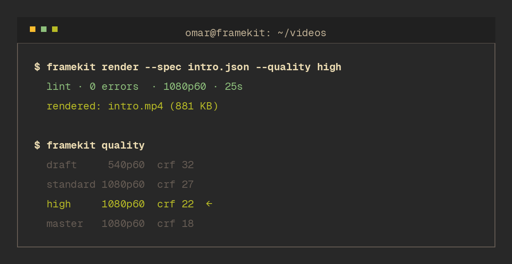
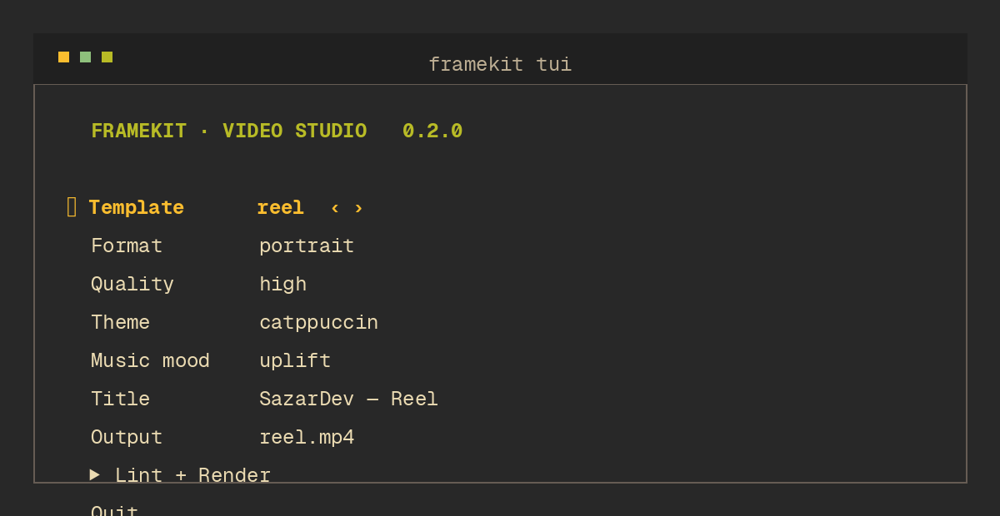
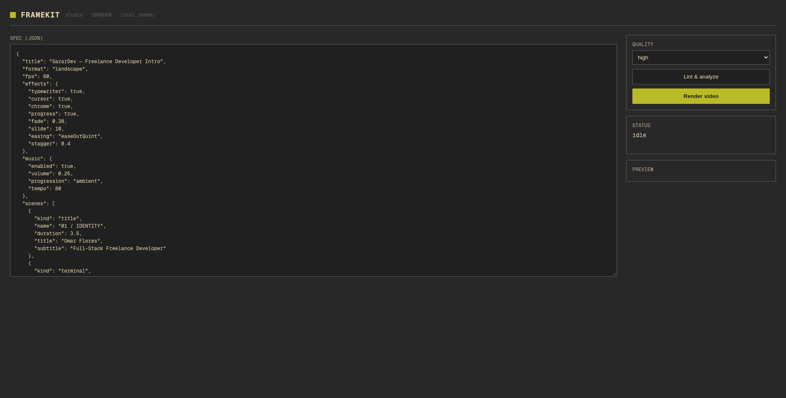

1080p60 by default
Native 1920×1080 at 60 fps in every quality profile. x264 animation tune, capped bitrate and level 4.2 — safe for portrait too.
1080P60 · LOCAL FIRST · WRITTEN IN GO
A declarative framework that renders flat-design videos with your design system. Geist Mono, gruvbox, synthesized music, templates, guardrails — and no cloud required.
$ go install github.com/sazardev/framekit/cmd/framekit@latest
$ framekit render --spec intro.json --quality high
rendered: intro.mp4 · 1920x1080 · 60fps · 881 KBv0.2.0 · MIT · ffmpeg required · renders entirely on your machine
01 / WHY
Native 1920×1080 at 60 fps in every quality profile. x264 animation tune, capped bitrate and level 4.2 — safe for portrait too.
Gruvbox palette and embedded Geist Mono match sazardev.stream exactly. Eight presets or full hex overrides. Flat: no gradients, shadows or radii.
Original ambient tracks synthesized in pure Go. Optional Cloudflare Workers AI voices, downloaded and mixed locally. No samples, no licensing.
Six production-ready specs — intro, reel, pitch, presentation, image showcase, quote — with {{var:default}} substitution.
Real text-overflow measurement, WCAG contrast, pacing, forbidden words, size estimates and asset policy. Strict by default in every render.
JSON Schema, a deterministic plan from natural language, batch variant generation and skill docs for coding agents.
02 / INTERFACES



$ framekit tui
$ framekit desktop # opens 127.0.0.1:823903 / QUALITY
Measured on the 25-second intro at 60 fps (1,500 frames). All profiles are faststart H.264 + AAC.
| Profile | Resolution | CRF | Preset | Bitrate cap | Real size |
|---|---|---|---|---|---|
| draft | 960×540@60 | 32 | veryfast | 800k | 329 KB |
| standard | 1920×1080@60 | 27 | veryfast | 1.8M | — |
| social | 1920×1080@60 | 25 | veryfast | 1.5M | — |
| high | 1920×1080@60 | 22 | veryfast | 3M | 881 KB |
| master | 1920×1080@60 | 18 | faster | 6M | — |
04 / SPEC
A spec is plain JSON. Agents can emit it from the published schema, humans can edit it by hand, and the linter checks it before a single frame is drawn.
.framekit.json{
"format": "landscape",
"effects": { "easing": "easeOutQuint" },
"music": { "progression": "ambient" },
"scenes": [
{ "kind": "title", "title": "Omar Flores" },
{ "kind": "stats", "stats": [...] }
]
}